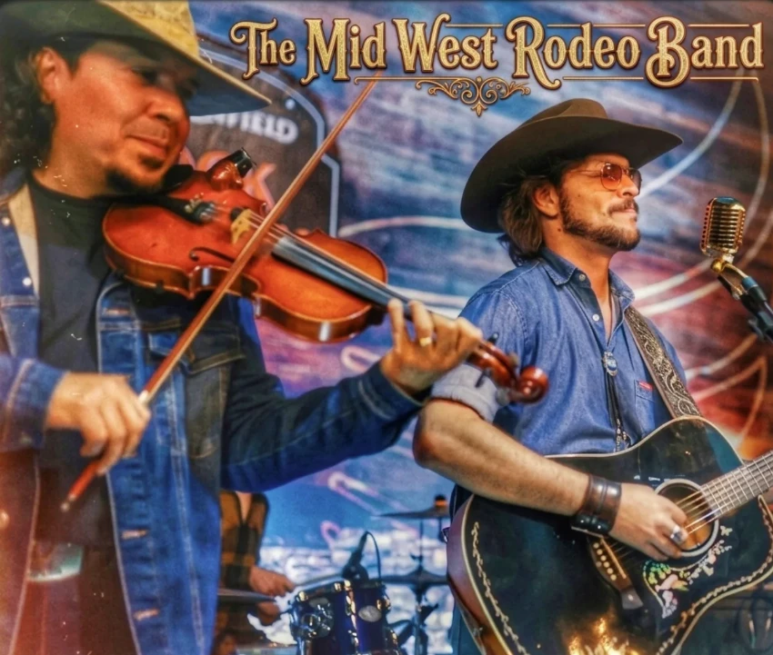
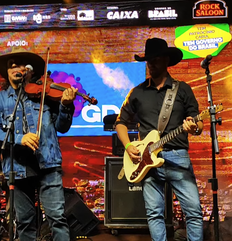
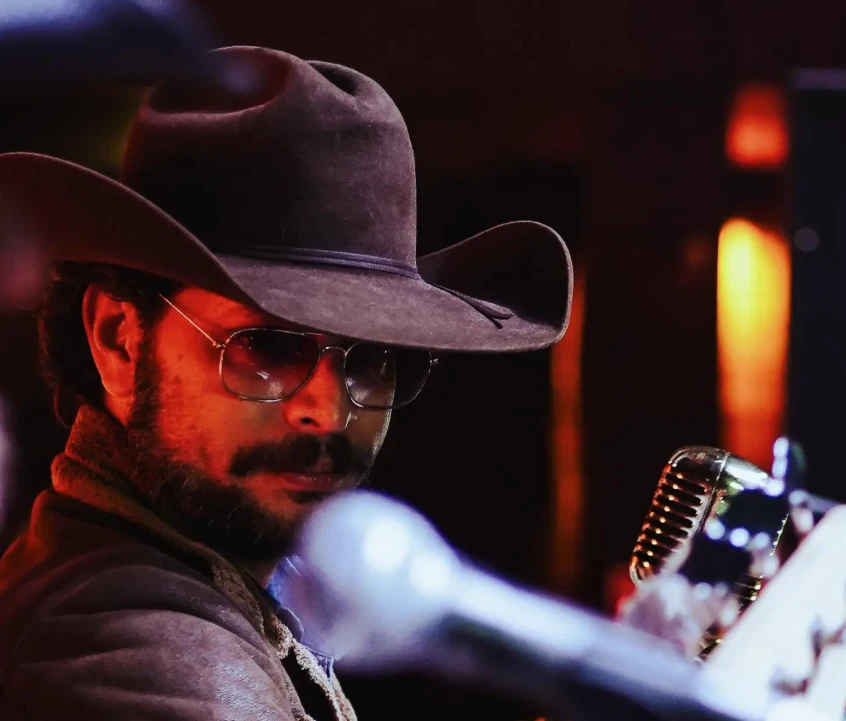
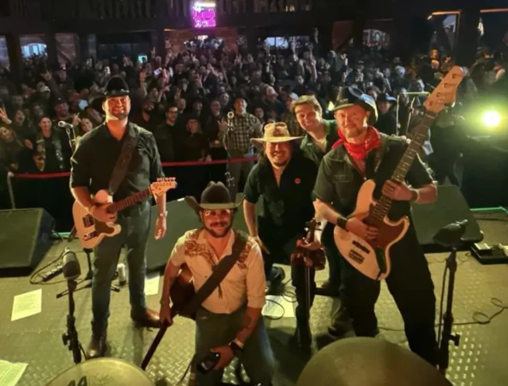
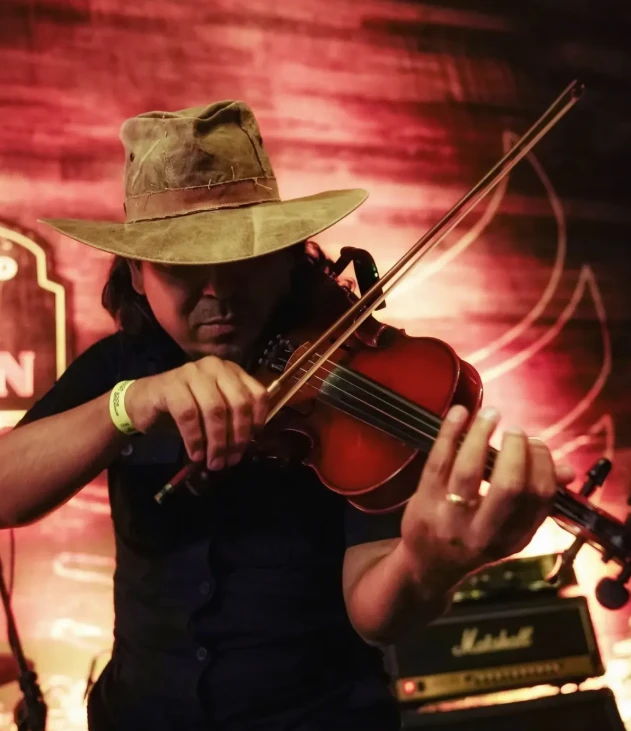
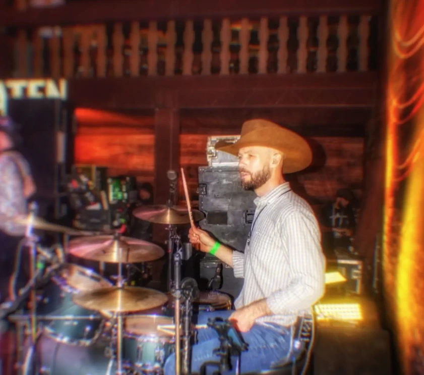
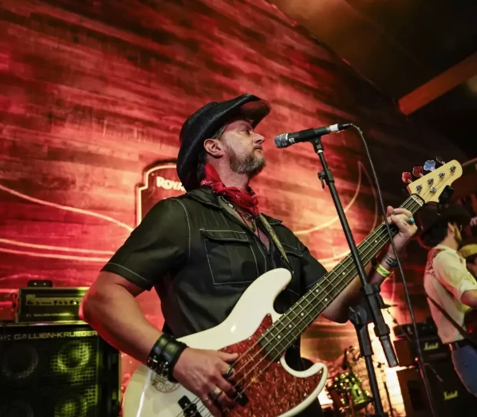

Cinco amigos, um gosto em comum

A Midwest Rodeo Band nasceu em Brasília da vontade de tocar o country e o rock que a gente sempre ouviu: estrada, poeira e guitarra alta.
Conte aqui como a banda começou: quando, onde e quem chamou quem.

A Midwest Rodeo Band nasceu em Brasília da vontade de tocar o country e o rock que a gente sempre ouviu: estrada, poeira e guitarra alta.
Conte aqui como a banda começou: quando, onde e quem chamou quem.

O violino do Michael e a guitarra do Paulo conversam o show inteiro, enquanto o baixo do Bob e a bateria do Sérgio seguram o galope.
Fale das influências: quais artistas inspiram vocês?

Chapéu na cabeça e microfone antigo na mão, Johnny Colorado puxa o coro e transforma o bar num salão de rodeio.

Hoje a banda leva esse som para bares, festas e eventos, com um repertório feito para cantar junto e dançar.
Cite aqui shows marcantes, festivais e lugares onde vocês já tocaram.


Vocal
Guitarra
Violino

Baixo
Bateria
Bares, festas, casamentos e eventos em Brasília e região.
Chamar no Instagram